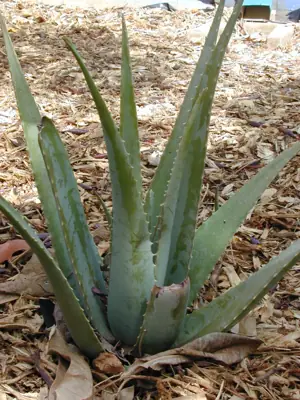

pranet · 出典付きの植物図鑑
アロエベラ ☠
Aloe vera (L.) Burm.f. · Asphodelaceae

アロエベラ はアロエ属に属する多肉植物の一種。アラビア半島南部、北アフリカ、カナリア諸島、カーボベルデが原産地だと考えられている。乾燥地帯でも育ち、アフリカ、インドやその他の地域に広く分布している。生薬としてもしばしば用いられる。アロエベラの薬効については多くの研究が行われている。その中には相反するものもあるが、抽出物は怪我・火傷・皮膚感染・皮脂嚢胞・糖尿病・高脂血症等に効くという証拠も多い。特にインスリン抵抗性の減少・レベル低下は、加齢関連の病態の予防に効果を発揮する可能性があると推測されている。これらの薬効は多糖・マンナン・アントラキノン・レクチン等の存在に依ると考えられている。治療用途に必要な成分抽出については品質管理が課題とされ、現在、流水で着色物質を洗い流し、特許取得済みの超乾燥システムを使用する方法が有効とされている。また、アロエ酪酸塩の免疫調節や慢性炎症に対する有用性も認められているものの、一方で新たな洞察が提出されることを期待する見方もある。増やし方は、挿し木、株分け。もっぱら葉挿しでも可能とされているが真偽は不明である。
出典: Wikipedia 日本語版「アロエベラ」 · CC BY-SA 4.0
異名: Aloe barbadensis Mill., Aloe chinensis Steud., Aloe elongata Murray, Aloe flava Pers., Aloe indica Royle, Aloe lanzae Tod., Aloe maculata Forssk., Aloe rubescens DC., Aloe variegata Forssk., Aloe vulgaris Lam.
同定や利用は自己責任でお願いします。この図鑑だけを根拠に野生の植物を食べないでください。
出典
- 学名: World Flora Online Plant List 2026-06 · CC0 1.0
- 名前: Wikipedia の記事名と Wikidata · CC0 1.0（Wikidata）。記事名は事実
- 説明: Wikipedia 日本語版「アロエベラ」 · CC BY-SA 4.0
- 食用・毒性: World Checklist of Useful Plant Species (Diazgranados et al. 2020, RBG Kew) · CC BY 4.0
- 分布: World Checklist of Vascular Plants (WCVP), RBG Kew, version 2026-06-04 · CC BY 3.0
このページは pranet のデータから自動生成しています。コードは MIT、データは項目ごとのライセンス（説明）。